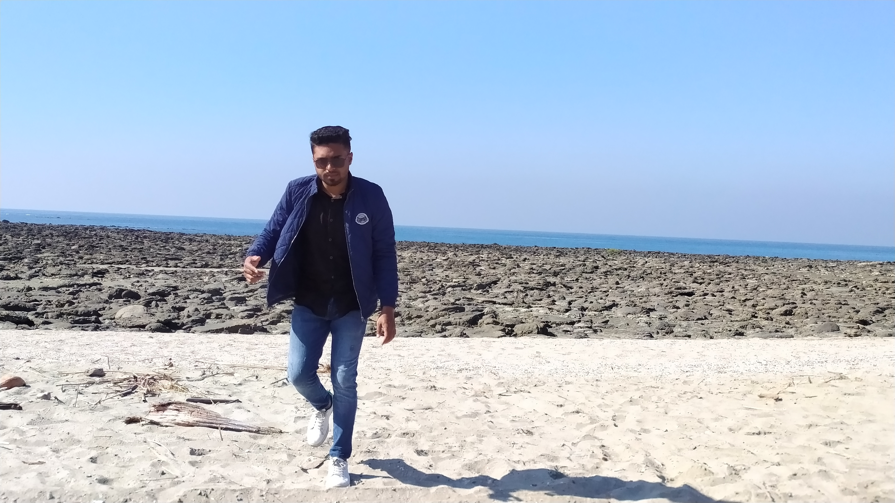

Sajek Tour 2020
Author: friend club association

Sajek Tripuri Valley is one of the most popular tourist spots in Bangladesh situated among the hills of the Kasalong range of mountains in Sajek union, Baghaichhari Upazila in Rangamati District.[3] The valley is 2,000 feet (610 m) above sea level.[4] Sajek Tripuri Valley is known as the Queen of Hills & Roof of Rangamati.
Bandarban Tour 2021
Author: University binary club

The three highest peaks of Bangladesh – Tahjindong (1,280 meters, also known as Bijoy), Mowdok Mual (1,052 meters), and Keokradong (883 metres) – are located in Bandarban district, as well as Raikhiang Lake, the highest lake in Bangladesh. Several mountains in the district include Tahjindong (1,280 meters), Mowdok Mual (1,052 m), and Keokradong (1,230 m). Chimbuk Peak and Boga Lake are two more highly noted features of the district. The Sangu River (also known as Sangpo or Shankha), the only river born inside Bangladesh territory, runs through Bandarban. The other rivers in the district are Matamuhuri and Bakkhali. Parts of Kaptai Lake, the biggest lake in Bangladesh, fall under the district.
The newly reported highest peak of Bangladesh, Saka Haphong (3,488 ft), is also here in Thanchi upazila. Most Bangladesh sources cite Keokradong as the highest peak in the country, but Tazing Dong (sometimes spelled as Tahjingdong, and also known as Bijoy) lying further east is recognised both by government and expert sources as a taller peak.
Sain_Martin tour 2019
author: 18th batch last tour

Saint Martin (French: Saint-Martin; Dutch: Sint Maarten) is an island in the northeast Caribbean Sea, approximately 300 km (190 mi) east of Puerto Rico. The 87 square kilometres (34 sq mi) island is divided roughly 60:40 between the French Republic (53 square kilometres (20 sq mi))[1] and the Kingdom of the Netherlands (34 square kilometres (13 sq mi)),[2] but the Dutch part is more populated than the French part. The division dates to 1648. The northern French part comprises the Collectivity of Saint Martin and is an overseas collectivity of the French Republic. As part of France, the French part of the island is also part of the European Union.[6] The southern Dutch part comprises Sint Maarten and is one of four constituent countries that form the Kingdom of the Netherlands.
On Jan. 1, 2019, the population of the whole island was 73,666 inhabitants, with 41,177 living on the Dutch side[4] and 32,489 on the French side.[5] Note that the figure for the French side is based on censuses that took place after the devastation of Hurricane Irma in September 2017, whereas the figure for the Dutch side is only a post-censal estimate still based on the 2011 census. The first census since Hurricane Irma on the Dutch side of the island is scheduled to take place in October 2022.[7] Population of the island on Jan. 1, 2017, before Hurricane Irma, was 75,869 (40,535 on the Dutch side,[4] 35,334 on the French side[8]).